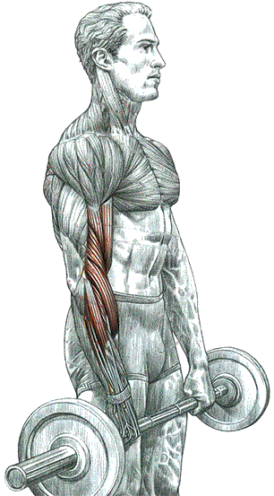
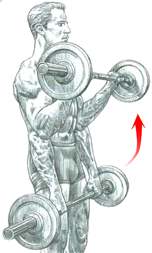

Cгибание рук со штангой хватом сверху

Техника выполнения

Стоя. Ноги поставить вместе, руки со штангой опустить вниз и держать хватом сверху в "замок", когда большие пальцы противостоят остальным пальцам кисти:
- сделать вдох, согнуть руки, поднимая штангу;
- по окончанию движения сделать выдох.
Это упражнение прорабатывает мышцы - разгибатели запястья: длинный лучевой разгибатель запястья, короткий лучевой разгибатель запястья, разгибатель пальцев ,разгибатель мизинца и локтевой разгибатель запястья.
Более того, оно способствует развитию плечелучевой мышцы, плечевой мышцы и в меньшей степени бицепса плеча.
Примечание: это упражнение в первую очередь способствует укреплению кистевых суставов, часто травмируемых вследствие дисбаланса, вызванного преобладанием мышц - сгибателей запястья над его разгибателями.
Именно поэтому оно входит в программу многих тренировок боксеров. Его используют, чтобы при выполнении жима с чрезмерным весом не дрожали запястья.
источник: "Анатомия силовых упражнений." Фредерик Делавье